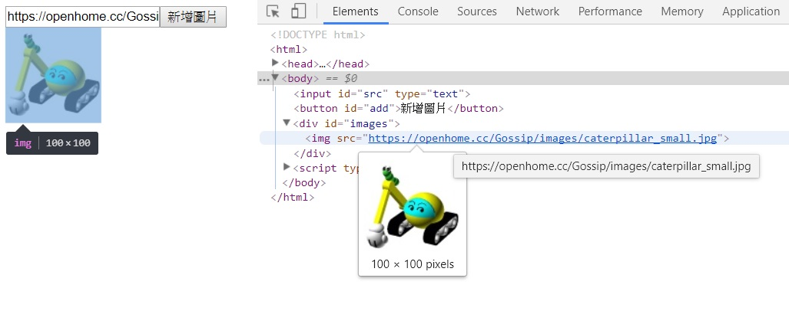

修改 DOM 樹
September 17, 2022在進入瀏覽器作為客戶端之後，屬性（Attribute）與特性（Property）這兩個名詞就不斷交相出現，到目前還沒正式解釋它們的意義。
屬性與特性
其實在正式進入瀏覽器作為客戶端前，對於 JavaScript 物件本身帶有的名稱，這邊的文件都用特性這個名詞。例如：
let obj = {
x : 10,
y : 20
};
之前文件都稱物件 obj 擁有特性 x 與 y，特性 x 的值為 10，特性 y 的值為 20。
HTML 本身可以擁有屬性。例如：
<input name="user" value="guest">
文件中會稱，<input> 標籤擁有屬性 name 與 value，屬性值各為 user 與 guest。
瀏覽器會剖析 HTML，為每個標籤建立對應的 DOM 物件，完成剖析後，對於 HTML 的所有屬性（無論標籤上是否有撰寫），DOM 物件上會建立對應的特性，通常屬性名稱是什麼，特性名稱也會是什麼，如果標籤上有設定某個屬性，則屬性值為何，特性值也就為何，如果標籤上沒有設置屬性，則 DOM 物件上的特性會有預設值。
例如方才的 HTML 片段，<input> 對應的 DOM 元素上，name 特性與 value 特性值分別是 'user' 與 'guest'。可以如下分別取得（假設是頁面中第一個 <input> 標籤）：
let input = document.getElementsByTagName('user')[0];
let name = input.name;
let value = input.value;
或者使用 ES6 以後的解構語法：
let input = document.getElementsByTagName('user')[0];
let {name, value} = input;
像這時，DOM 元素上的 name、value 特性，要稱為 name 與 value 屬性也是沒錯，因為此時特性對應於屬性。對於 HTML 沒有設定的標籤屬性，DOM 也會有對應的特性，不過都是預設值，例如，上面的 <input> 標籤並沒有設置 type 屬性，但 DOM 物件上對應的特性，其值為 'text'。
不過，HTML 的屬性名稱未必與 DOM 物件的特性名稱相對應。
例如 class 就是一個例子，因為 class 在 JavaScript 中是關鍵字，在 DOM 上要取得 HTML 的 class 屬性對應名稱必須使用 className，<label> 的 for 屬性也是，因為 for 是 JavaScript 中的關鍵字，而必須使用 htmlFor 特性來取得。例如：
<img id="logo" src="images/caterpillar.jpg"
class="logo" title="Caterpillar's Logo"/>
若要以 JavaScript 取得 HTML 的 class 屬性值，則必須：
let className = document.getElementById('logo').className;
透過 JavaScript 特性存取方式取得 HTML 屬性的對應值，也未必是 HTML 屬性中真正設定的值。例如，透過 JavaScript 取得 <img> 的 src，結果是絕對 URL，即使屬性中設定的是相對 URL。
瀏覽器在剖析完 HTML 後，對於HTML中有設置的屬性，其實會在 DOM 物件上建立 attributes 特性。你可以如下顯示 attributes 的元素值，attributes 的型態是 NamedNodeMap，為類陣列物件，其中每個元素的型態是 Attr，屬性也被視為節點，因此想取得屬性名稱與屬性值，是透過 nodeName 與 nodeValue：
let attributes = document.getElementById('logo').attributes;
Array.from(attributes).forEach(attr => {
let {nodeName, nodeValue} = attr;
console.log(`${nodeName}:${nodeValue}`);
});
以物件結構來表示的話：
{
attributes : {
'0' : {nodeName : 'id', nodeValue : 'logo', ...},
'1' : {nodeName : 'src', nodeValue : 'images/src', ...},
'2' : {nodeName : 'class', nodeValue : 'logo', ...},
'3' : {nodeName : 'title', nodeValue : 'Caterpillar\’s logo', ...},
length : 4
...
},
id : 'logo',
src : 'https://openhome.cc/images/caterpillar.jpg',
className : 'logo',
title : 'Caterpillar\'s logo',
…
}
Attr 實例上的特性值，是 HTML 上真正設定的屬性與值。在文件剖析完畢後，DOM 物件上的特性與 attributes 上 Attr 實例之特性是對應的。
注意以上是以物件結構來示意，並不是指真正的型態就是上面所表示的。attributes 的型態會是 NamedNodeMap，而每個索引元素的型態會是 Attr，如果手邊有個 JavaScript Debugger 之類的工具，可以很方便地觀察這些東西。
修改屬性／特性
可以使用 DOM 物件的 getAttribute 來取得 attributes 中的屬性，使用 setAttribute 設定 attributes 中的屬性（同時亦會改變 DOM 對應的特性），使用 removeAttribute 來移除 attributes 屬性。
移除屬性是指移除 attributes 上對應的特性值，而非移除 DOM 物件上對應的特性（屬性）值，DOM 物件上對應的特性（屬性）值在使用 removeAttribute 後，只是回到預設值，而不是直接將特性移除，沒有任何操作可以將DOM上對應屬性的特性移除。
如果 HTML 上沒有設置該屬性，則使用 getAttribute 指定該屬性會取得 null，但並不表示 DOM 上沒有對應屬性的特性，而是該特性值會是預設值。使用 setAttribute 可以在 attributes 中設定屬性，相對應的 DOM 特性值也會改變。
例如，以下的程式，只會將 attributes 中對應 src 屬性的 Attr 實例移除，不會移除 DOM 上 src 特性（屬性），DOM 上 src 只是回到 '' 的預設值，也就是空字串。
let img = document.getElementById('logo');
img.removeAttribute('src');
// img.src 的值是 ''，不是 undefined
// img.attributes['src'] 是 undefined
如果直接改變 DOM 上的特性，attributes 中對應的屬性會有對應的變化，反之亦然；然而記得，屬性名稱不見得對應特性名稱，例如 input 元素：
<input id="user" value="guest">
使用以下的程式：
document.getElementById('user').value = 'Justin';
let user1 = document.getElementById('user').value; // 值是 'Justin'
let user2 = document.getElementById('user').getAttribute('value'); // 值是 'guest'
你設定了 DOM 元素的 value 特性，然而並未改變 input 標籤的 value 屬性，這是因為 input 標籤的 value 屬性值，其實是對應 DOM 元素的 defaultValue，在沒有被程式修改的情況下，value 特性值會等於 defaultValue；透過程式修改 value，並不會影響 defaultValue。
對 input 來說，想要影響 getAttribute('value') 的結果，方式之一是修改 defaultValue 而不是 value，修改 defaultValue 的同時也會修改 value 值；另一個方式是透過 setAttribute：
document.getElementById('user').setAttribute('value', 'Justin');
// 值是 'Justin'
let user1 = document.getElementById('user').value;
// 值是 'Justin'
let user2 = document.getElementById('user').getAttribute('value');
基於安全考量，input 的 type 為 file 時，defaultValue、value 屬性的設置會被忽略，也無法透過程式碼來取得 DOM 的 defaultValue、value 特性，使用程式碼設置 DOM 的 defaultValue、value，或透過 setAttribute 設值會影響 DOM 相對應的特性，但是對瀏覽器表單或檔案上傳行為沒有影響，只能由使用者親自選取檔案。
瀏覽器剖析完 HTML 後，建立的 DOM 元素會組成樹狀結構，瀏覽器上呈現的畫面，就是根據 DOM 樹繪製出來，只要改變 DOM 樹，瀏覽器就會根據改變後的 DOM 樹重繪畫面，而這就構成動態修改文件的基本原理。
底下這個範例示範如何動態新增與刪除圖片：
<!DOCTYPE html>
<html>
<head>
<meta charset="utf-8">
<meta name="viewport" content="width=device-width">
</head>
<body>
<input id="src" type="text"><button id="add">新增圖片</button>
<div id="images"></div>
<script type="text/javascript">
document.getElementById('add').onclick = function() {
let img = document.createElement('img');
img.src = document.getElementById('src').value;
img.onclick = function() {
document.getElementById('images').removeChild(this);
};
document.getElementById('images').appendChild(img);
};
</script>
</body>
</html>
在原本的 HTML 中，並沒有任何的 <img> 元素，當在文字方塊中輸入圖片的網址並按下按鈕時，會使用 document 的 createElement 來動態建立元素，此時這個元素並沒有繫結至 DOM 樹，所以還不會出現在畫面上。
接著你設定建立的圖片元素 src 為輸入的網址，並註冊按下圖片時，使用 removeChild 將圖片本身（this）從 id 為 images 的 <div> 中移除。
最後，將這個動態建立的圖片元素使用 appendChild 附加至 id 為 images 的 <div> 元素成為其子元素，此時瀏覽器根據 DOM 樹結構重繪畫面。
當使用 JavaScript 動態改變 DOM 樹時，在瀏覽器的檢視網頁原始碼中，是看不到動態調整後的 HTML（那是一開始載入的靜態 HTML），你要使用瀏覽器中的開發者工具，才能看到動態的 DOM 畫面。例如 Chrome 的「開發人員工具」：

每個節點都只能有一個父節點，如果直接取得 DOM 樹中既有的節點，並使用 appendChild 將之附加至另一個節點，則表示節點會從原有的父節點脫離，再附加至另一節點。例如：
<!DOCTYPE html>
<html>
<head>
<meta charset="utf-8">
<meta name="viewport" content="width=device-width">
</head>
<body>
容器一：
<div id="container1">
<img id="image" src="https://openhome.cc/Gossip/images/caterpillar_small.jpg"/>
</div><br>
容器二：
<div id="container2"></div>
<script type="text/javascript">
document.getElementById('image').onclick = function() {
let container1 = document.getElementById('container1');
let container2 = document.getElementById('container2');
if(this.parentNode === container1) {
container2.appendChild(this);
}
else {
container1.appendChild(this);
}
};
</script>
</body>
</html>
在這個例子中，點選圖片，會將圖片來回附加於兩個 <div> 之間，由於一個節點只能有一個父節點，所以 appendChild 的動作，會使被附加的節點從原父節點脫離。
createElement 是用來建立標籤對應的元素，如果要建立文字節點，必須使用 createTextNode，如果要動態建立屬性，則使用 createAttribute（少用）。
例如，若有個 <div id="console"></div>，想要在其中附加文字，可以如下：
let text = document.createTextNode('your text ....');
document.getElementById('console').appendChild(text);
也可以使用 insertBefore、replaceChild 等方法來調整 DOM 樹上的節點，各種方法的說明可以參考〈JavaScript and HTML DOM Reference〉。
要注意的是，只要你將節點附加至 DOM，瀏覽器就會重繪畫面，若有大量的節點要建立，每次建立就附加至 DOM 樹，則會有效能的問題。建議在背景準備好節點樹片段，等樹片段準備好，再將樹片段的根節點繫結至 DOM 樹，如此會有比較好的效能。
除了自行建立片段之外，也可以使用 createDocumentFragment 來建立 DocumentFragment，利用它在背景作樹片段組織，再一次將 DocumentFragment 附加至 DOM 樹。
DOM 元素有個非標準的 innerHTML 特性，你可以用之取得標籤中內含的 HTML，也可以指定字串給 innerHTML，瀏覽器會剖析這個字串，並建立對應的 DOM 元素安插至元素中，過去它不是標準特性，但幾乎每個瀏覽器都支援，而 HTML 5 已將 innerHTML 納入標準。
例如，要在上面提及的 <div> 中建立 <b>哈囉</b>，可以如下：
document.getElementById('console').innerHTML = '<b>哈囉</b>';